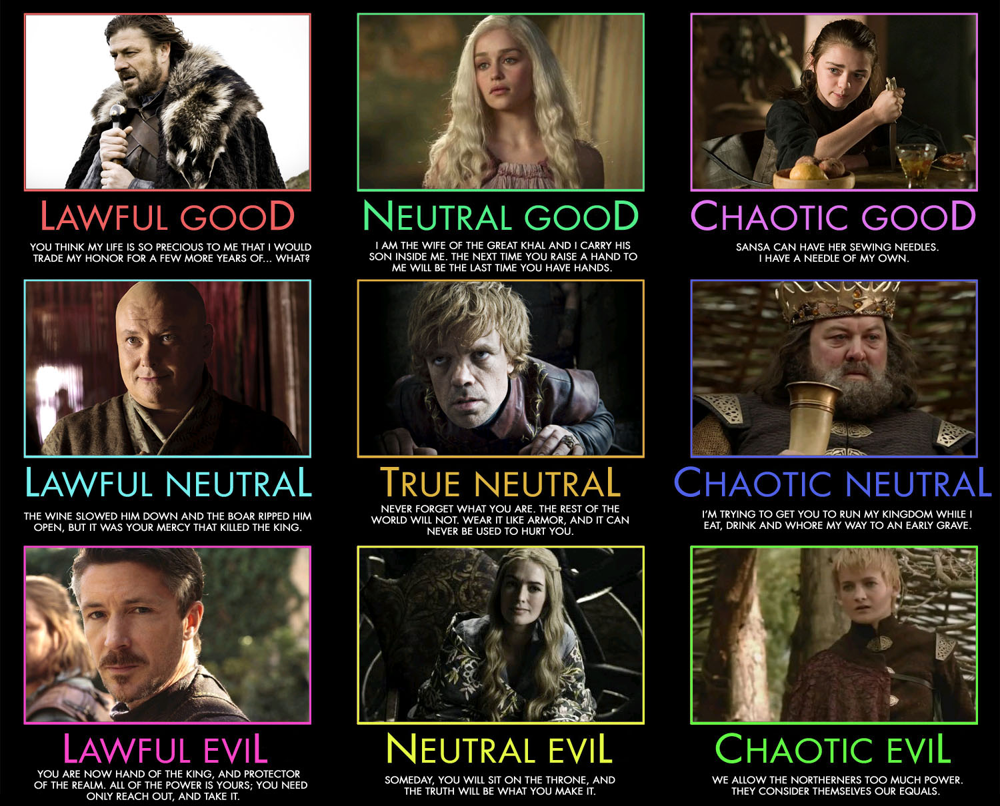

Alignement
L'alignement de votre personnage est une information qui vous servira à choisir les actions de votre personnage selon les situations.
L'alignement n'est pas une sorte de code de conduite strict, mais représente plutôt des principes généraux. Ainsi, un personnage loyal peut utiliser la ruse, un personnage bon peut être cupide ou orgueilleux. L'alignement est plutôt une aura que dégage le personnage, aura à laquelle sont sensibles certains êtres (dont les dieux), certains sorts et certains objets magiques...
C'est une composante sur deux axes:
- La loi
- L'éthique
Et voici une image pour comprendre rapidement: 